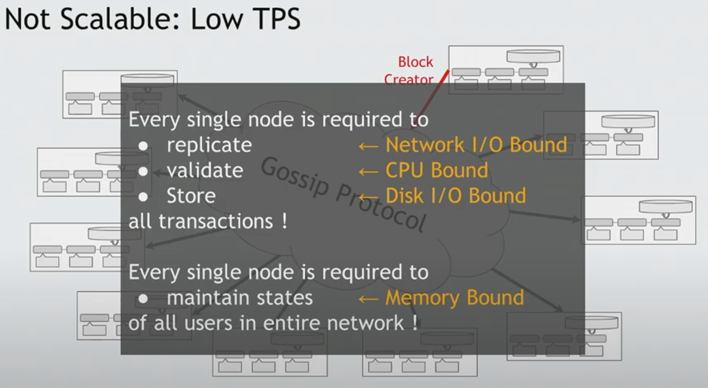
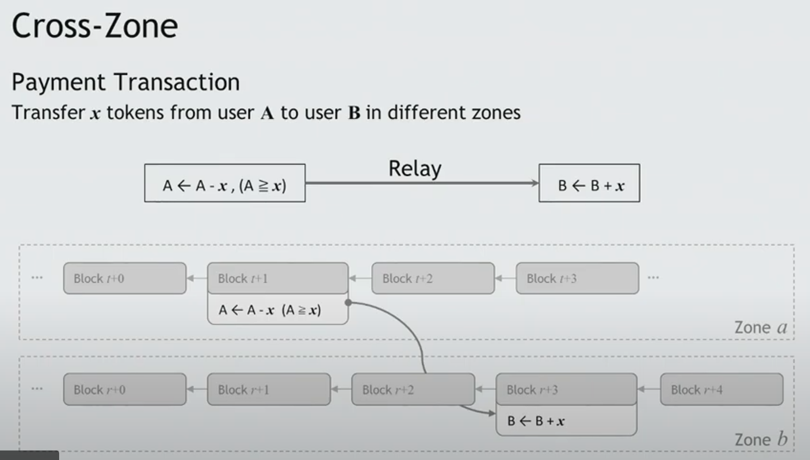
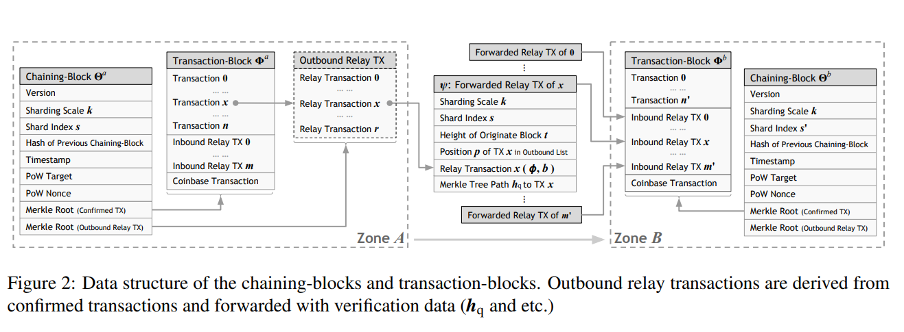
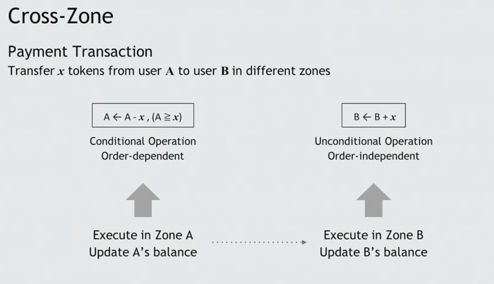
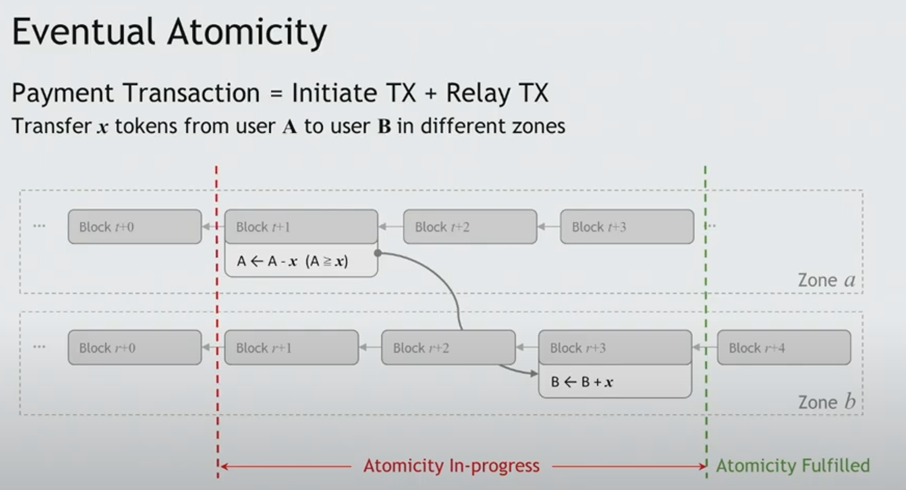

<!DOCTYPE html>
<html lang="en" dir="auto">

<head><meta charset="utf-8">
<meta http-equiv="X-UA-Compatible" content="IE=edge">
<meta name="viewport" content="width=device-width, initial-scale=1, shrink-to-fit=no">
<meta name="robots" content="index, follow">
<title>Monoxide: Scale out Blockchains with Asynchronous Consensus Zones | Zhanbo&#39;s Blog</title>
<meta name="keywords" content="">
<meta name="description" content="Problem In general blockchain, every single node is required to replicate, validate, store and maintain the states of all users in entire network. Solution This paper present a idea to divide the blockchain into different asynchronous consensus zones (multi-instanitiation of independent blockchain systems). Partitioning workloads of the entire network, distribute to zones. Parallelize blovk creation and transaction handling since we have multi-independent blockchain. To achieve linear scalability as the entire">
<meta name="author" content="Zhanbo">
<link rel="canonical" href="/posts/read/monoxide/">
<link crossorigin="anonymous" href="/assets/css/stylesheet.css" rel="preload stylesheet" as="style">
<script defer crossorigin="anonymous" src="/assets/js/highlight.js" onload="hljs.initHighlightingOnLoad();"></script>
<link rel="icon" href="favicon.ico">
<link rel="icon" type="image/png" sizes="16x16" href="favicon-16x16.png">
<link rel="icon" type="image/png" sizes="32x32" href="favicon-32x32.png">
<link rel="apple-touch-icon" href="apple-touch-icon.png">
<link rel="mask-icon" href="safari-pinned-tab.svg">
<meta name="theme-color" content="#2e2e33">
<meta name="msapplication-TileColor" content="#2e2e33">
<noscript>
    <style>
        #theme-toggle,
        .top-link {
            display: none;
        }

    </style>
    <style>
        @media (prefers-color-scheme: dark) {
            :root {
                --theme: rgb(29, 30, 32);
                --entry: rgb(46, 46, 51);
                --primary: rgb(218, 218, 219);
                --secondary: rgb(155, 156, 157);
                --tertiary: rgb(65, 66, 68);
                --content: rgb(196, 196, 197);
                --hljs-bg: rgb(46, 46, 51);
                --code-bg: rgb(55, 56, 62);
                --border: rgb(51, 51, 51);
            }

            .list {
                background: var(--theme);
            }

            .list:not(.dark)::-webkit-scrollbar-track {
                background: 0 0;
            }

            .list:not(.dark)::-webkit-scrollbar-thumb {
                border-color: var(--theme);
            }
        }

    </style>
</noscript><meta property="og:title" content="Monoxide: Scale out Blockchains with Asynchronous Consensus Zones" />
<meta property="og:description" content="Problem In general blockchain, every single node is required to replicate, validate, store and maintain the states of all users in entire network. Solution This paper present a idea to divide the blockchain into different asynchronous consensus zones (multi-instanitiation of independent blockchain systems). Partitioning workloads of the entire network, distribute to zones. Parallelize blovk creation and transaction handling since we have multi-independent blockchain. To achieve linear scalability as the entire" />
<meta property="og:type" content="article" />
<meta property="og:url" content="/posts/read/monoxide/" /><meta property="article:section" content="posts" />
<meta property="article:published_time" content="2023-02-11T01:01:06+01:00" />
<meta property="article:modified_time" content="2023-02-11T01:01:06+01:00" />

<meta name="twitter:card" content="summary"/>
<meta name="twitter:title" content="Monoxide: Scale out Blockchains with Asynchronous Consensus Zones"/>
<meta name="twitter:description" content="Problem In general blockchain, every single node is required to replicate, validate, store and maintain the states of all users in entire network. Solution This paper present a idea to divide the blockchain into different asynchronous consensus zones (multi-instanitiation of independent blockchain systems). Partitioning workloads of the entire network, distribute to zones. Parallelize blovk creation and transaction handling since we have multi-independent blockchain. To achieve linear scalability as the entire"/>


<script type="application/ld+json">
{
  "@context": "https://schema.org",
  "@type": "BreadcrumbList",
  "itemListElement": [, 
    {
      "@type": "ListItem",
      "position":  2 ,
      "name": "Posts",
      "item": "/posts/"
    }, 
    {
      "@type": "ListItem",
      "position":  3 ,
      "name": "Read",
      "item": "/posts/read/"
    }, 
    {
      "@type": "ListItem",
      "position":  4 ,
      "name": "Monoxide: Scale out Blockchains with Asynchronous Consensus Zones",
      "item": "/posts/read/monoxide/"
    }
  ]
}
</script>
<script type="application/ld+json">
{
  "@context": "https://schema.org",
  "@type": "BlogPosting",
  "headline": "Monoxide: Scale out Blockchains with Asynchronous Consensus Zones",
  "name": "Monoxide: Scale out Blockchains with Asynchronous Consensus Zones",
  "description": "Problem In general blockchain, every single node is required to replicate, validate, store and maintain the states of all users in entire network. Solution This paper present a idea to divide the blockchain into different asynchronous consensus zones (multi-instanitiation of independent blockchain systems). Partitioning workloads of the entire network, distribute to zones. Parallelize blovk creation and transaction handling since we have multi-independent blockchain. To achieve linear scalability as the entire",
  "keywords": [
    
  ],
  "articleBody": "Problem In general blockchain, every single node is required to replicate, validate, store and maintain the states of all users in entire network.\nSolution This paper present a idea to divide the blockchain into different asynchronous consensus zones (multi-instanitiation of independent blockchain systems). Partitioning workloads of the entire network, distribute to zones. Parallelize blovk creation and transaction handling since we have multi-independent blockchain. To achieve linear scalability as the entire network is divided into more zones.\nBackground The system presented by this paper use Account/Balance transaction models and PoW. This paper uses the account/balance model due to its simplicity since a transaction with an arbitrary amount can be performed with one sending account and one receiving account. Another important benefit offered by the account/ballance model is allowing transactions to carry incremental updates of states, as oppose to the UTXO transactions that can only carry full states.\nSystem Design\rHandling a payment that involves two users from different zones example:\nThe withdraw oper\u0002ation ρ that only involves the state in zone A is handledby a miner in zone A. If the account balance satisfiesthe cost of this withdraw operation, the corresponding block t + 1 carrying the transaction (initiative transac\u0002tion) will be created by the miner and only be appendedto the chain of zone A. After that, a relay transactioncarrying the deposit operation φ is composed in zone Aand forwarded to zone B. The deposit operation φ thatonly involves the state in zone B can always be executed,regardless of the balance of the target account in zone B.Once the relay transaction is picked up by another minerin zone B, operation φ will be executed, concluding thecomplete of the payment transaction.\nPartitioning and Naming The account of user is represented by its address(a fix-sized hash value of its public key). Uniformly partitioning the space of user address into 2 power to k zones: a zone is identified by its sharding scale k and zone index s.\nThe zone index of an initiative transaction is determined by the payer’s address, and the zone index of a relay transaction is determinated by the payee’s address.\nIn the system of paper, full nodes join swarms to broadcast new transactions and receive blocks from other full nodes. A swarm is a group of nodes that participate in the replication of the same data set. For example, in Bitcoin or Ethereum, there is only one swarm and every full node replicates the same dataset, including all blocks and transactions. In the system of paper, there is a global swarm which joined by all full nodes for replicating the minimum common information of all zones. the most communication occurs in zone-specific swarm with full nodes belonging to specific zones only. In each swarm, the participating full nodes are sparsely connected, and use the gossip protocol to broadcast message.\nIsolated Intra-Zone Workload A full node, or a miner, will have a persistent identifier that is initialized randomly. With address space partitioning, a blockchain is established within each zone independently. Only care about their own zone! They should ignore any blocks or transactions received that do not belong to their zone(although those are unlikely to be received).\nMinimized Cross-Zone Overhead In a blockchain system, most communication is for replicating unconfirmed transactions and for broadcasting new blocks carring confirmed ones. But since now we have isolated zones, so the most communication is performed only among nodes within the zone. Each node maintain a DHT to help them find the specific zone for their peers. After getting the zone index s of an unconfirmed transaction or a forwarding block, system selects out nodes having the same zone index as s based on the lcoal DHT routing table, and it sends the transaction and block to these nodes following the gossip protocol. This way help to minimized data for chain forming excluding actual confirmed transactions are replicated across all zones (what is the actual confirmed transactions?)\nContribustion\nContribution Efficient Cross-Zone Atomicity Chaining-block a pointer to the precursor block\na PoW nonce\na Merkle tree root of the list of confirmed transactions\na Merkle tree root of the list of all relay transactions originated from initiative transactions in this block, which is used for the validation of relay transactions in other zones.\nDual-stage transaction handling mechanism By deriving and forwarding a relay transaction that carries the deposit operation to its destination zone.\nTransaction Validation and Forwarding at Zone A\nA miner pick up a unconfirmed transaction when they are constructing a new block.\nThe initiative transaction is validated if the balance of a is less than the transfer amount, this transactin wil be marked as invalid, and be concluded and embedded in the block.\nOtherwise, a chaining-block and a transaction-block are constructed. Transaction-block has a list of validated transactions including the one from a to b.\nThe miner work on the PoW puzzle specific to the list of all confirmed transactions.\nAfter the PoW puzzle is solved, the chaining-block is broadcast in the global swarm and the transaction-block is broadcast in a’s zone-specific swarm.\nWhen the other nodes wihtin this zone received the transaction-block, the intra-zone transactions are executed and concluded. The withdraw operation in all cross-zone transactions are then executed(on the other zones).\nEach cross-zone transaction derives an outbound relay transaction, which will be sent to the destination zone.\nRelay Transaction Handling at Zone B\nAn inbound relay transaction is picked up by a miner in payee b’s zone when constructing a new block.\nThe miner verifies the inbound relay transaction against its originate block. Skip this if invalid.\nThe miner constructed a new chaining-block and a new transaction-block including the inbound relay transaction.\nAs same as before the chaining-block will be broadcast in global swarm and the transaction-block will be broadcast in b’s zone after the PoW puzzle is solved.\nThe deposit operation is executed, concluding the transaction.\nVerification Let’s skip this part and regard it as a black box to use!!!\nEventual Atomicity A payment transaction involving withdraw and deposit operations, should be atomic to ensure corrrectness of the global ledger!!!\nRSCoin and OmniLedger use two-phase commit mechanism to ensure the atomicity, with the known lock/unlock overhead.\nIn this system, for a cross-zone trnsaction, allow the withdraw operation to execute first, then the the corresponding deposit operation to be settlled later. They call such an atomicity, eventual atomicity.\nTheir design ensures is that relay transactions will not be discriminated by sufficiently incentivizing with a fee split.\nfee split: incentivize both miners working on initial step and relayed step of transaction handling\nA rational miner prioritizes unconfirmed transactions based on the transaction fee. This paper introduce fee splitting for cross-zone transactions. The author recommend cross-zone transaction issuer set double or even triple the amount of transaction fees to make sure the relayed transactions can be prioritized with transaction fee after fee split.\nWe introduce fee splitting for cross-zone transactions,which incentivize both miners working on initial step andrelayed step of transaction handling so that relayed trans\u0002actions will be equally prioritized with transaction feesat similar levels 最后一句陈述的意思是处于similar level(worklaod 类似)的initial step of transactions和relayed step of transactions能够平等地根据transaction fee来区分优先级。\nIn the existing blockchain system, a payment transac\u0002tion will be visible to its payee once it is packed in ablock on the chain (first confirm). It will be secured aftern − 1 successive blocks appended (n-th confirm, n = 6in Bitcoin and 12 in Ethereum). In contrast, a cross\u0002zone payment transaction in our system will be visible to the payee, once its relay transaction is forwarded to thepayee’s zone, and its originate block becomes available.With the eventual atomicity, the transaction is consideredas eventually secured, once its initiative transaction gets n-confirmed, and the relay transaction gets a first confirm. (这一段是关于可见性的)\nFork Resolution Let’s skip this part!!!\nMining Power Diluted with Multiple Zones Skip this part now!\n[1] nsdi19-wang-jiaping.pdf (usenix.org)\n[2] Monoxide: Scale out Blockchains with Asynchronous Consensus Zones | USENIX\n",
  "wordCount" : "1416",
  "inLanguage": "en",
  "datePublished": "2023-02-11T01:01:06+01:00",
  "dateModified": "2023-02-11T01:01:06+01:00",
  "author":[{
    "@type": "Person",
    "name": "Zhanbo"
  }],
  "mainEntityOfPage": {
    "@type": "WebPage",
    "@id": "/posts/read/monoxide/"
  },
  "publisher": {
    "@type": "Organization",
    "name": "Zhanbo's Blog",
    "logo": {
      "@type": "ImageObject",
      "url": "favicon.ico"
    }
  }
}
</script>
</head>

<body class="" id="top">
<script>
    if (localStorage.getItem("pref-theme") === "dark") {
        document.body.classList.add('dark');
    } else if (localStorage.getItem("pref-theme") === "light") {
        document.body.classList.remove('dark')
    } else if (window.matchMedia('(prefers-color-scheme: dark)').matches) {
        document.body.classList.add('dark');
    }

</script>

<header class="header">
    <nav class="nav">
        <div class="logo">
            <a href="" accesskey="h" title="Zhanbo&#39;s Blog (Alt + H)">
                Zhanbo&#39;s Blog</a>
            <div class="logo-switches">
                <button id="theme-toggle" accesskey="t" title="(Alt + T)">
                    <svg id="moon" xmlns="http://www.w3.org/2000/svg" width="24" height="18" viewBox="0 0 24 24"
                        fill="none" stroke="currentColor" stroke-width="2" stroke-linecap="round"
                        stroke-linejoin="round">
                        <path d="M21 12.79A9 9 0 1 1 11.21 3 7 7 0 0 0 21 12.79z"></path>
                    </svg>
                    <svg id="sun" xmlns="http://www.w3.org/2000/svg" width="24" height="18" viewBox="0 0 24 24"
                        fill="none" stroke="currentColor" stroke-width="2" stroke-linecap="round"
                        stroke-linejoin="round">
                        <circle cx="12" cy="12" r="5"></circle>
                        <line x1="12" y1="1" x2="12" y2="3"></line>
                        <line x1="12" y1="21" x2="12" y2="23"></line>
                        <line x1="4.22" y1="4.22" x2="5.64" y2="5.64"></line>
                        <line x1="18.36" y1="18.36" x2="19.78" y2="19.78"></line>
                        <line x1="1" y1="12" x2="3" y2="12"></line>
                        <line x1="21" y1="12" x2="23" y2="12"></line>
                        <line x1="4.22" y1="19.78" x2="5.64" y2="18.36"></line>
                        <line x1="18.36" y1="5.64" x2="19.78" y2="4.22"></line>
                    </svg>
                </button>
            </div>
        </div>
        <ul id="menu">
            <li>
                <a href="/" title="Home">
                    <span>Home</span>
                </a>
            </li>
            <li>
                <a href="posts" title="Posts">
                    <span>Posts</span>
                </a>
            </li>
        </ul>
    </nav>
</header>
<main class="main">

<article class="post-single">
  <header class="post-header">
    <div class="breadcrumbs"><a href="">Home</a>&nbsp;»&nbsp;<a href="/posts/">Posts</a>&nbsp;»&nbsp;<a href="/posts/read/">Read</a></div>
    <h1 class="post-title">
      Monoxide: Scale out Blockchains with Asynchronous Consensus Zones
    </h1>
    <div class="post-meta"><span title='2023-02-11 01:01:06 +0100 CET'>2023-02-11</span>&nbsp;·&nbsp;3 min&nbsp;·&nbsp;Zhanbo

</div>
  </header> <div class="toc">
    <details  open>
        <summary accesskey="c" title="(Alt + C)">
            <span class="details">Table of Contents</span>
        </summary>

        <div class="inner"><ul>
                <li>
                    <a href="#problem" aria-label="Problem">Problem</a></li>
                <li>
                    <a href="#solution" aria-label="Solution">Solution</a></li>
                <li>
                    <a href="#background" aria-label="Background">Background</a><ul>
                        
                <li>
                    <a href="#partitioning-and-naming" aria-label="Partitioning and Naming">Partitioning and Naming</a></li>
                <li>
                    <a href="#isolated-intra-zone-workload" aria-label="Isolated Intra-Zone Workload">Isolated Intra-Zone Workload</a></li>
                <li>
                    <a href="#minimized-cross-zone-overhead" aria-label="Minimized Cross-Zone Overhead">Minimized Cross-Zone Overhead</a></li></ul>
                </li>
                <li>
                    <a href="#contribution" aria-label="Contribution">Contribution</a><ul>
                        
                <li>
                    <a href="#efficient-cross-zone-atomicity" aria-label="Efficient Cross-Zone Atomicity">Efficient Cross-Zone Atomicity</a><ul>
                        
                <li>
                    <a href="#chaining-block" aria-label="Chaining-block">Chaining-block</a></li>
                <li>
                    <a href="#dual-stage-transaction-handling-mechanism" aria-label="Dual-stage transaction handling mechanism">Dual-stage transaction handling mechanism</a></li>
                <li>
                    <a href="#verification" aria-label="Verification">Verification</a></li>
                <li>
                    <a href="#eventual-atomicity" aria-label="Eventual Atomicity">Eventual Atomicity</a></li>
                <li>
                    <a href="#fork-resolution" aria-label="Fork Resolution">Fork Resolution</a></li></ul>
                </li>
                <li>
                    <a href="#mining-power-diluted-with-multiple-zones" aria-label="Mining Power Diluted with Multiple Zones">Mining Power Diluted with Multiple Zones</a>
                </li>
            </ul>
            </li>
            </ul>
        </div>
    </details>
</div>

  <div class="post-content"><h2 id="problem">Problem<a hidden class="anchor" aria-hidden="true" href="#problem">#</a></h2>
<p>In general blockchain, every single node is required to replicate, validate, store and maintain the states of all users in entire network.</p>
<p>
</p>
<h2 id="solution">Solution<a hidden class="anchor" aria-hidden="true" href="#solution">#</a></h2>
<p>This paper present a idea to divide the blockchain into different asynchronous consensus zones (multi-instanitiation of independent blockchain systems). Partitioning workloads of the entire network, distribute to zones. Parallelize blovk creation and transaction handling since we have multi-independent blockchain. To achieve linear scalability as the entire network is divided into more zones.</p>
<p>
</p>
<h2 id="background">Background<a hidden class="anchor" aria-hidden="true" href="#background">#</a></h2>
<p>The system presented by this paper use Account/Balance transaction models and PoW. This paper uses the account/balance model due to its simplicity since a transaction with an arbitrary amount can be performed with one sending account and one receiving account. Another important benefit offered by the account/ballance model is allowing transactions to carry incremental updates of states, as oppose to the UTXO transactions that can only carry full states.</p>
<h2 id="system-design3png">System Design
</h2>
<p><strong>Handling a payment that involves two users from different zones example:</strong></p>
<p>The withdraw operation ρ that only involves the state in zone A is handledby a miner in zone A. If the account balance satisfiesthe cost of this withdraw operation, the corresponding block t + 1 carrying the transaction (initiative transaction) will be created by the miner and only be appendedto the chain of zone A. After that, a relay transactioncarrying the deposit operation φ is composed in zone Aand forwarded to zone B. The deposit operation φ thatonly involves the state in zone B can always be executed,regardless of the balance of the target account in zone B.Once the relay transaction is picked up by another minerin zone B, operation φ will be executed, concluding thecomplete of the payment transaction.</p>
<h3 id="partitioning-and-naming">Partitioning and Naming<a hidden class="anchor" aria-hidden="true" href="#partitioning-and-naming">#</a></h3>
<p>The account of user is represented by its address(a fix-sized hash value of its public key). Uniformly partitioning the space of user address into 2 power to <em>k</em> zones: a zone is identified by its sharding scale <em>k</em> and zone index <em>s</em>.</p>
<p>The zone index of an initiative transaction is determined by the payer&rsquo;s address, and the zone index of a relay transaction is determinated by the payee&rsquo;s address.</p>
<p>In the system of paper, full nodes join <em>swarms</em> to broadcast new transactions and receive blocks from other full nodes. A swarm is a group of nodes that participate in the replication of the same data set. For example, in Bitcoin or Ethereum, there is only one swarm and every full node replicates the same dataset, including all blocks and transactions. In the system of paper, there is a <em>global swarm</em> which joined by all full nodes for replicating the minimum common information of all zones. the most communication occurs in <em>zone-specific swarm</em> with full nodes belonging to specific zones only. In each swarm, the participating full nodes are sparsely connected, and use the gossip protocol to broadcast message.</p>
<h3 id="isolated-intra-zone-workload">Isolated Intra-Zone Workload<a hidden class="anchor" aria-hidden="true" href="#isolated-intra-zone-workload">#</a></h3>
<p>A full node, or a miner, will have a persistent identifier that is initialized randomly. With address space partitioning, a blockchain is established within each zone independently. <strong>Only care about their own zone!</strong> They should ignore any blocks or transactions received that do not belong to their zone(although those are unlikely to be received).</p>
<h3 id="minimized-cross-zone-overhead">Minimized Cross-Zone Overhead<a hidden class="anchor" aria-hidden="true" href="#minimized-cross-zone-overhead">#</a></h3>
<p>In a blockchain system, most communication is for replicating unconfirmed transactions and for broadcasting new blocks carring confirmed ones. But since now we have isolated zones, so the most communication is performed only among nodes within the zone. Each node maintain a DHT to help them find the specific zone for their peers. After getting the zone index <em>s</em> of an unconfirmed transaction or a forwarding block, system selects out nodes having the same zone index as <em>s</em> based on the lcoal DHT routing table, and it sends the transaction and block to these nodes following the gossip protocol. This way help to minimized data for chain forming excluding actual confirmed transactions are replicated across all zones <strong>(what is the actual confirmed transactions?)</strong></p>
<p>Contribustion</p>
<h2 id="contribution">Contribution<a hidden class="anchor" aria-hidden="true" href="#contribution">#</a></h2>
<h3 id="efficient-cross-zone-atomicity">Efficient Cross-Zone Atomicity<a hidden class="anchor" aria-hidden="true" href="#efficient-cross-zone-atomicity">#</a></h3>
<h4 id="chaining-block">Chaining-block<a hidden class="anchor" aria-hidden="true" href="#chaining-block">#</a></h4>
<ul>
<li>
<p>a pointer to the precursor block</p>
</li>
<li>
<p>a PoW nonce</p>
</li>
<li>
<p>a Merkle tree root of the list of confirmed transactions</p>
</li>
<li>
<p>a Merkle tree root of the list of all relay transactions originated from initiative transactions in this block, which is used for the validation of relay transactions in other zones.</p>
</li>
</ul>
<p>
</p>
<h4 id="dual-stage-transaction-handling-mechanism">Dual-stage transaction handling mechanism<a hidden class="anchor" aria-hidden="true" href="#dual-stage-transaction-handling-mechanism">#</a></h4>
<p>By deriving and forwarding a relay transaction that carries the deposit operation to its destination zone.</p>
<ul>
<li>
<p><strong>Transaction Validation and Forwarding at Zone A</strong></p>
<ol>
<li>
<p>A miner pick up a unconfirmed transaction when they are constructing a new block.</p>
</li>
<li>
<p>The initiative transaction is validated if the balance of <em>a</em> is less than the transfer amount, this transactin wil be marked as invalid, and be concluded and embedded in the block.</p>
</li>
<li>
<p>Otherwise, a chaining-block and a transaction-block are constructed. Transaction-block has a list of validated transactions including the one from <em>a</em> to <em>b</em>.</p>
</li>
<li>
<p>The miner work on the PoW puzzle specific to the list of all confirmed transactions.</p>
</li>
<li>
<p>After the PoW puzzle is solved, the chaining-block is broadcast in the global swarm and the transaction-block is broadcast in <em>a</em>&rsquo;s zone-specific swarm.</p>
</li>
<li>
<p>When the other nodes wihtin this zone received the transaction-block, the intra-zone  transactions are executed and concluded. The withdraw operation in all cross-zone transactions are then executed(on the other zones).</p>
</li>
<li>
<p>Each cross-zone transaction derives an outbound relay transaction, which will be sent to the destination zone.</p>
</li>
</ol>
</li>
<li>
<p><strong>Relay Transaction Handling at Zone B</strong></p>
<ol>
<li>
<p>An inbound relay transaction is picked up by a miner in payee <em>b</em>&rsquo;s zone when constructing a new block.</p>
</li>
<li>
<p>The miner verifies the inbound relay transaction against its originate block. Skip this if invalid.</p>
</li>
<li>
<p>The miner constructed a new chaining-block and a new transaction-block including the inbound relay transaction.</p>
</li>
<li>
<p>As same as before the chaining-block will be broadcast in global swarm and the transaction-block will be broadcast in <em>b</em>&rsquo;s zone after the PoW puzzle is solved.</p>
</li>
<li>
<p>The deposit operation is executed, concluding the transaction.</p>
</li>
</ol>
</li>
</ul>
<h4 id="verification">Verification<a hidden class="anchor" aria-hidden="true" href="#verification">#</a></h4>
<p>Let&rsquo;s skip this part and regard it as a black box to use!!!</p>
<h4 id="eventual-atomicity">Eventual Atomicity<a hidden class="anchor" aria-hidden="true" href="#eventual-atomicity">#</a></h4>
<p><strong>A payment transaction involving withdraw and deposit operations, should be atomic to ensure corrrectness of the global ledger!!!</strong></p>
<p>RSCoin and OmniLedger use two-phase commit mechanism to ensure the atomicity, with the known lock/unlock overhead.</p>
<p><strong>In this system, for a cross-zone trnsaction, allow the withdraw operation to execute first, then the the corresponding deposit operation to be settlled later.</strong> They call such an atomicity, <strong>eventual atomicity</strong>.</p>
<p><strong>Their design ensures is that relay transactions will not be discriminated by sufficiently incentivizing with a fee split.</strong></p>
<p><strong>fee split</strong>: incentivize both miners working on initial step and relayed step of transaction handling</p>
<p>A rational miner prioritizes unconfirmed transactions based on the transaction fee. This paper introduce fee splitting for cross-zone transactions. The author recommend cross-zone transaction issuer set double or even triple the amount of transaction fees to make sure the relayed transactions can be prioritized with transaction fee after fee split.</p>
<p><em>We introduce fee splitting for cross-zone transactions,which incentivize both miners working on initial step andrelayed step of transaction handling so that relayed transactions will be equally prioritized with transaction feesat similar levels</em> 最后一句陈述的意思是处于similar level(worklaod 类似)的initial step of transactions和relayed step of transactions能够平等地根据transaction fee来区分优先级。</p>
<p>
</p>
<p>
</p>
<p>
</p>
<p>In the existing blockchain system, a payment transaction will be visible to its payee once it is packed in ablock on the chain (first confirm). It will be secured aftern − 1 successive blocks appended (n-th confirm, n = 6in Bitcoin and 12 in Ethereum). In contrast, a crosszone payment transaction in our system will be visible to the payee, once its relay transaction is forwarded to thepayee’s zone, and its originate block becomes available.With the eventual atomicity, the transaction is consideredas eventually secured, once its initiative transaction gets n-confirmed, and the relay transaction gets a first confirm. (这一段是关于可见性的)</p>
<h4 id="fork-resolution">Fork Resolution<a hidden class="anchor" aria-hidden="true" href="#fork-resolution">#</a></h4>
<p>Let&rsquo;s skip this part!!!</p>
<h3 id="mining-power-diluted-with-multiple-zones">Mining Power Diluted with Multiple Zones<a hidden class="anchor" aria-hidden="true" href="#mining-power-diluted-with-multiple-zones">#</a></h3>
<p>Skip this part now!</p>
<p>[1] <a href="https://www.usenix.org/system/files/nsdi19-wang-jiaping.pdf">nsdi19-wang-jiaping.pdf (usenix.org)</a></p>
<p>[2] <a href="https://www.usenix.org/conference/nsdi19/presentation/wang-jiaping">Monoxide: Scale out Blockchains with Asynchronous Consensus Zones | USENIX</a></p>


  </div>

  <footer class="post-footer">
    <ul class="post-tags">
    </ul>
<nav class="paginav">
  <a class="next" href="/posts/read/sharding1/">
    <span class="title">Next »</span>
    <br>
    <span>Towards Scaling Blockchain Systems via Sharding</span>
  </a>
</nav>

  </footer>
</article>
    </main>
    
<footer class="footer">
    <span>&copy; 2023 <a href="">Zhanbo&#39;s Blog</a></span>
    <span>
        Powered by
        <a href="https://gohugo.io/" rel="noopener noreferrer" target="_blank">Hugo</a> &
        <a href="https://github.com/adityatelange/hugo-PaperMod/" rel="noopener" target="_blank">PaperMod</a>
    </span>
</footer>
<a href="#top" aria-label="go to top" title="Go to Top (Alt + G)" class="top-link" id="top-link" accesskey="g">
    <svg xmlns="http://www.w3.org/2000/svg" viewBox="0 0 12 6" fill="currentColor">
        <path d="M12 6H0l6-6z" />
    </svg>
</a>

<script>
    let menu = document.getElementById('menu')
    if (menu) {
        menu.scrollLeft = localStorage.getItem("menu-scroll-position");
        menu.onscroll = function () {
            localStorage.setItem("menu-scroll-position", menu.scrollLeft);
        }
    }

    document.querySelectorAll('a[href^="#"]').forEach(anchor => {
        anchor.addEventListener("click", function (e) {
            e.preventDefault();
            var id = this.getAttribute("href").substr(1);
            if (!window.matchMedia('(prefers-reduced-motion: reduce)').matches) {
                document.querySelector(`[id='${decodeURIComponent(id)}']`).scrollIntoView({
                    behavior: "smooth"
                });
            } else {
                document.querySelector(`[id='${decodeURIComponent(id)}']`).scrollIntoView();
            }
            if (id === "top") {
                history.replaceState(null, null, " ");
            } else {
                history.pushState(null, null, `#${id}`);
            }
        });
    });

</script>
<script>
    var mybutton = document.getElementById("top-link");
    window.onscroll = function () {
        if (document.body.scrollTop > 800 || document.documentElement.scrollTop > 800) {
            mybutton.style.visibility = "visible";
            mybutton.style.opacity = "1";
        } else {
            mybutton.style.visibility = "hidden";
            mybutton.style.opacity = "0";
        }
    };

</script>
<script>
    document.getElementById("theme-toggle").addEventListener("click", () => {
        if (document.body.className.includes("dark")) {
            document.body.classList.remove('dark');
            localStorage.setItem("pref-theme", 'light');
        } else {
            document.body.classList.add('dark');
            localStorage.setItem("pref-theme", 'dark');
        }
    })

</script>
<script>
    document.querySelectorAll('pre > code').forEach((codeblock) => {
        const container = codeblock.parentNode.parentNode;

        const copybutton = document.createElement('button');
        copybutton.classList.add('copy-code');
        copybutton.innerHTML = 'copy';

        function copyingDone() {
            copybutton.innerHTML = 'copied!';
            setTimeout(() => {
                copybutton.innerHTML = 'copy';
            }, 2000);
        }

        copybutton.addEventListener('click', (cb) => {
            if ('clipboard' in navigator) {
                navigator.clipboard.writeText(codeblock.textContent);
                copyingDone();
                return;
            }

            const range = document.createRange();
            range.selectNodeContents(codeblock);
            const selection = window.getSelection();
            selection.removeAllRanges();
            selection.addRange(range);
            try {
                document.execCommand('copy');
                copyingDone();
            } catch (e) { };
            selection.removeRange(range);
        });

        if (container.classList.contains("highlight")) {
            container.appendChild(copybutton);
        } else if (container.parentNode.firstChild == container) {
            
        } else if (codeblock.parentNode.parentNode.parentNode.parentNode.parentNode.nodeName == "TABLE") {
            
            codeblock.parentNode.parentNode.parentNode.parentNode.parentNode.appendChild(copybutton);
        } else {
            
            codeblock.parentNode.appendChild(copybutton);
        }
    });
</script>
</body>

</html>
